Saint Martin Lys - Le train Touristique
Table des entrées de la page
Historique par Jean-Pierre LESCURE cofondateur du TPCF
Pour mieux parler du train touristique, il faut en connaître l'histoire,
c'est préférable.
Je vais dans un premier temps me présenter. Je suis Jean-Pierre Lescure,
né à Paris 6ème mais auvergnat de cœur et occitan de fait. Je suis
arrivé en haute vallée de l'Aude en mai 1977 et me suis installé près de
Couiza dans un petit village. (Je réside depuis une trentaine d'années à
Espéraza). J'ai connu ce village dès 1975 par un beau frère qui venait
de s'installer sur une petite propriété agricole avec sa famille. Je
suis venu avec ma compagne de l'époque pour créer une entreprise
coopérative de bâtiment avec deux autres associés, venu également de la
région parisienne. L'Aude, une région que personne ne connaissait, mais
que nous avons vite appréciée. Nous avons fait partie de ces "néos
ruraux", venus dans l'Aude pour trouver une vie plus conforme à nos idées.
J'ai toujours aimé le monde du chemin de fer et le modélisme ferroviaire
en particulier. Très jeune pour moi, nous allions en famille en Auvergne
avec le train. Je vais entamer ma vie professionnelle dès mes 18 ans
dans le bureau d'étude d'une entreprise de construction, jusqu'à mon
départ pour l'Aude. Notre entreprise va vivre jusqu'en 1991, et à cette
date je vais changer d'orientation pour aller vers l'accompagnement de
porteurs de projets. Le modélisme ferroviaire va me rattraper dès 1985,
quand un ami va monter un magasin de modélisme sur Limoux. En 1987 un
club est créé et j'y adhère.
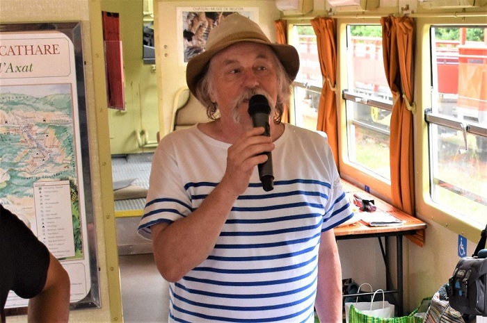
Jean-Pierre Lescure - photo prise lors de son dernier anniversaire à bort du Picasso (autorail du TPCF)
En 1990, je rencontre des gens des PO et de l'Aude qui étaient intéressés
par le chemin de fer, celui de l'Aude et des PO en particulier.
Certaines de ces personnes rencontrées autour du modélisme ferroviaire
et d'autres autour du chemin de fer réel. Avec le club de modélisme
évoqué plus haut, installé près de Limoux, nous avons reproduit une
grande partie de la section de ligne Limoux/Quillan. Gare de Limoux,
d'Alet les bains, Espéraza, la halte de Brézillou et enfin celle de
Quillan. Nous avons également reproduit l'entrée du Tunnel de la
Pierre-Lys et des ouvrages autour d'Axat.
Revenons au train touristique, après de nombreuses rencontres ce petit
groupe a créé le TPCF en 1993, le but étant de mettre en place un train
touristique sur Rivesaltes Axat/St Martin-Lys, de susciter l'idée de
reposer la voie dans la Pierre-Lys et de travailler sur la ligne
Carcassonne/Quillan dans son aspect touristique avec les élus et la
SNCF. Au sujet de la section de ligne Quillan/St Martin-Lys, il est plus
que regrettable que celle-ci ait été déposée en 89/90 après bien des
années d'inactivité ... Depuis 1956, elle était là en l'état et ne
gênait personne. En 1987/88 des amateurs de patrimoine de Quillan ont
interrogé la SNCF sur l'utilisation éventuelle de cette section de ligne,
pour faire rouler du matériel ferroviaire préservé, et pouvait être
envisageable. Après consultation des différentes structures concernées,
cette question a abouti... par une dépose rapide de la voie, pour enlever
toutes idées de projet. La DDE de l'Aude en a été l'un des acteurs
principaux pour en arriver là. Comme quoi quand on a une idée, il faut
être prudent de ne pas déranger un système qui aboutit à l'inverse de ce
que l'on voulait entreprendre.
Je reviens au train touristique, à cette époque, nous étions très
attentifs aux travaux des élus écologistes régionaux pour améliorer et
conforter les lignes du Languedoc-Roussillon. Des réunions étaient
régulièrement programmées sur différents sujets et nous réunissaient.
Donc l'association TPCF était née et nous avons rapidement travaillé
avec les partenaires obligés (communes, départements, SNCF...) pour la
mise en place de ce train touristique. Il va nous falloir de la patience
car créée en 1993, le premier train ne circulera qu'en... automne 2002.
Difficile de raconter ces années de travail, mais en cet automne 2002,
l'autorail Picasso acheté à une autre association a roulé pour ses
premières balades, seulement à cette date. L'association s'occupe de
faire circuler les trains et ce sont les billets qui financent
l'activité. Un syndicat des communes, créé pour l'occasion, mobilise des
fonds de diverses provenances pour réaliser les aménagements dans les
gares, la signalétique et la création des voitures découvertes. Pour les
quais par exemple, ce sont bien ces fonds et le travail du syndicat avec
TPCF qui financent les travaux.
En 2006, la SARL TPCF est créée pour l'exploitation commerciale du train
touristique. L'association s'occupant de gérer le patrimoine ferroviaire
et certains de ses membres conduisent les trains en convention avec la
SARL. Quelques temps après est construite la gare TPCF d'Axat avec
l'aide la communauté de commune de l'époque et du syndicat du train
touristique. D'années en années la fréquentation s'affirme et le Pays
Cathare est visité par de nombreux touristes d'une façon originale. Au
printemps 2021, une activité de vélos rail devrait débuter autour
d'Axat, St Martin-Lys, le site de Campérié. Cette activité devrait
apporter au territoire une nouvelle clientèle.
Jean-Pierre Lescure.
Post-scriptum :
Pour St Martin, le quai [de la gare] a été réalisé plus tardivement car l'intérêt
était discuté. A l'époque l'usine était présente et l'environnement peu
touristique. L'intérêt de monter à St Martin résidait de l'existence du
restaurant le Rébenty pour les repas de la clientèle et pour ce bout de
ligne entre Axat et le terminus, tellement touristique.
En ce qui concerne la gare, les emprises sont à vendre seulement : pas de
location car SNCF veut s'en séparer. Seule une collectivité peut
l'acquérir pour la SNCF. Un projet de développement avec des privés est
envisageable. Il faut que le territoire soit motivé et favorise l'aide
à des porteurs de projet. Le territoire en a-t-il la volonté ?
Reste que le train touristique et bientôt les vélos-rails sont des
activités particulières et que tous projets devront être en phase avec
ces deux activités. Les propriétaires du Rébenty sont très intéressés
pour que le site de la gare soit développeur d'activités, ce qui est une
bonne chose. Un projet de réouverture du chemin qui allait à St Martin
village est dans les cartons. Il est ralenti par la recherche des
différents propriétaires des parcelles mitoyennes à ce chemin. Cela
pourrait créer une balade jusqu'au village pour les marcheurs arrivant
par le train, avec peut-être l'installation d'une activité de
restauration...
Le matériel roulant des débuts de l'exploitation
Photos et textes de Jean-Pierre Lescure
Picasso - Premier autorail utilisé par TPCF
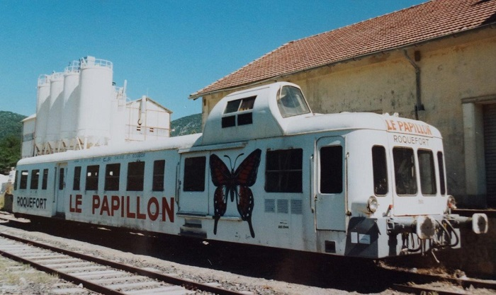
Le Picasso lors de son arrivée à Caudiès, avant sa première exploitation par le TPCF
Le Picasso avait été acheminé depuis Lamalou les bains, lieu où il était remisé, avant son achat par le TPCF.
Nous sommes en 2001, il fera ses premières prestations à l'automne de cette année là. Ce seront des sorties promotionnelles pour les élus et la population locale afin de découvrir
la ligne et ce que sera ce train touristique dans l'avenir.
L'autorail
est encore aux couleurs de la société "Roquefort Le Papillon" sponsor de
l'association qui envisageait de le faire rouler sur la ligne
Roquefort/Tournemire le Larzac. Ligne qui avait été reconstruite par le
régiment du génie de Versailles, en vue de pouvoir monter du matériel
militaire au camp de La Cavalerie. Finalement l'extension du camp est
suspendue et la ligne inachevée... Malheureusement l'association de
Roquefort n'aura jamais l'autorisation de circuler sur cette ligne
abandonnée. Des années plus tard, la ligne sera revendue à une entreprise qui
a installé des vélos-rails et les fait circuler chaque saison pour le
plaisir des vacanciers présents autour du plateau du Larzac.
Notre Picasso sera mis à disposition d'une autre association qui a monté une
activité de train touristique entre Lodève et Lamalou les bains.
Malheureusement le projet n'a pas perduré car les élus locaux n'y ont
pas adhéré et les porteurs du projet étaient peu entreprenant. Le
Picasso se trouvait de nouveau sans emploi et à vendre.
Le TPCF a fait une proposition d'achat et l'autorail gagna la ligne des Fenouillèdes et
du Pays Cathare, en marchandise roulante.
Au début de l'exploitation il a circulé dans ces couleurs Aveyronnaises avec juste le sigle du TPCF.
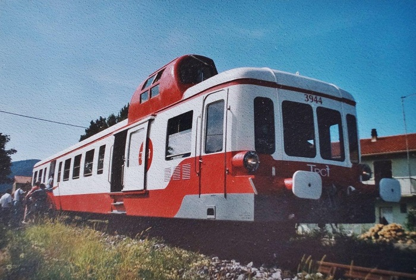
Le Picasso repeint aux couleurs du train du Pays
Cathare à Caudiès de Fenouillèdes
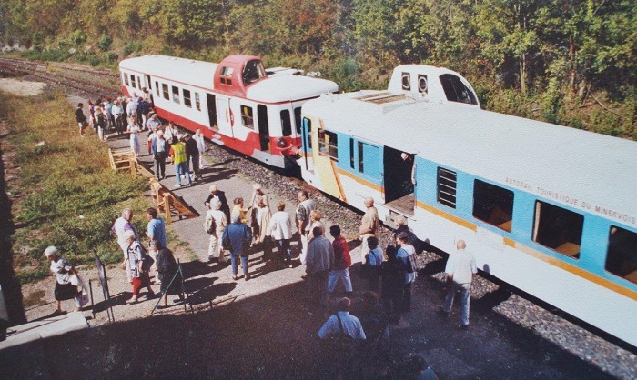
Le Picasso en gare d'Axat, accompagné de l'un des Picasso de l'ATM
L'ATM (Association des Trains du Minervois) basée à Narbonne, n'avait pas d'utilité de ce Picasso pour la saison d'exploitation 2004. Toutefois l'exploitation de deux Picasso [permet de doubler le nombre de places pour un voyage mais] demande deux conducteurs et deux personnes d'accompagnement, ce qui est coûteux en personnel et donc n'est pas satisfaisant.
Caravelle - Premier autorail EAD (Élément Automoteur Diesel) utilisé par TPCF
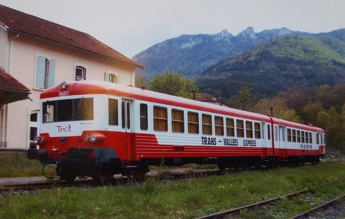
Caravelle en gare d'Axat et mise au couleurs du TPCF en 2006
Le Picasso étant devenu limite en capacité et ne pouvant
tracter une voiture, ces éléments automoteurs ont permis l'augmentation
de l'offre et un développement nécessaire à l'activité. Jusqu'à trois
éléments peuvent être engagés sur un train avec un seul conducteur et
emmener en balade plus de 400 personnes assises.
Sur toutes les photos on remarque que nous sommes au tout début de
l'activité, pas de quai, pas d'équipement pour l'accueil des
voyageurs... C'était il y a plus de 15 ans...
Les trains panoramiques en voitures découvertes du train touristique TPCF
Photos et textes de Jean-Pierre Lescure
Quand les promoteurs du Train du Pays Cathare et des Fenouillèdes et les partenaires locaux ont travaillé sur l'image de ce train touristique, ils étaient conscients qu'il fallait lui trouver une identité propre. L'histoire de cette ligne s'étant arrêtée en 1938 (fin du service voyageur) on ne pouvait s'appuyer sur une exploitation qui était oubliée de tous. Aucun autorail n'avait assuré un service ferroviaire, et aucun un train mythique n'avait circulé sur la ligne. Il fallait proposer autre chose. Il fallait avant tout faire découvrir le territoire aux touristes de façon magistrale en tenant compte des étés chauds de notre région. Finalement l'option a été de créer un train avant tout panoramique et découvert.
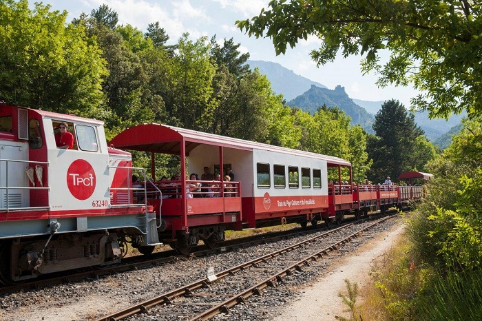
Le train panoramique en dessous du château de Puilaurens
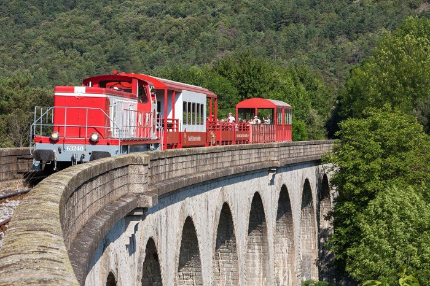
Le train panoramique sur le viaduc d'Axat - magnifique point de vue sur les gorges de St Georges et sur la plaine d'Axat
Ces trains circulent avant tout sur la section St Paul de Fenouillet Axat/St Martin-Lys, dans les deux sens et pour certains sur des parcours plus courts au départ d'Axat. Ces trains circulent de Mai à fin octobre sur ce parcours.
La composition du train panoramique et découvert
Avant tout il fallait des locomotives pour tracter les voitures panoramiques. Ce furent des locomotives diesel du type 63000 qui étaient disponibles, que le TPCF a retenu.

Des machines relativement simples et puissantes pour affronter les rampes de 25mm/m de la ligne.
Pour les voitures, les concepteurs ont utilisé des wagons de marchandise déclassés par la SNCF. Les premières transformations furent étudiées par un bureau d'étude et construite par des personnes en insertion sous couvert d'une association d'insertion. Cette structure a permis à de nombreuses personnes de se remettre au travail et découvrir des métiers qui pouvaient être une piste pour leur recherche d'emploi. Puis par la suite l'équipe du TPCF s'étant étoffée, ce sont les salariés qui continuèrent ces travaux. Il faut savoir que TPCF emploi un mécanicien, un peintre carrossier à l'année et du personnel polyvalent ponctuellement. Le TPCF utilise également les services d'un travailleur indépendant pour les travaux de voie et de la mécanique. Quant il fallu construire une voiture couverte pour les personnes sensibles au soleil, il fut fait appel aux entreprises locales. Donner du travail au territoire, est aussi une préoccupation du TPCF et du syndicat du train touristique.

La construction de la voiture couverte à essieux réalisée à l'époque du chantier d'insertion.
(Dernière des voitures qu'on peut voir sur les photos du train panoramique)

La construction de la grande voiture couverte, par l'entreprise de St Paul de Fenouillet et son transport vers la gare de St Paul pour sa remise sur voie

Mise en peinture par les employés de TPCF, puis mise en service des voitures découvertes
Depuis Rivesaltes
La section basse Rivesaltes/St Paul de Fenouillet est parcourue par les autorails type EAD en simple ou double éléments, suivant le besoin. Les EAD ouvrent la saison avec les trains de Pâques sur tout le parcours jusqu'à fin avril et fin octobre et achèvent l'année avec les trains du Père Noël.
Des circulations spéciales sur la ligne Rivesaltes Axat/St Martin-Lys.
Le service SNCF assuré sur la ligne :
La ligne Rivesaltes-St Paul de Fenouillet-Axat-Quillan, sous l’égide de la Compagnie du MIDI, puis du PO-MIDI*, a perdu son service voyageurs en 1938 à la création de la SNCF, remplacé par des autocars. Les trains de marchandises étaient tractés essentiellement par des machines à vapeurs jusqu’en 1948. A cette date, les premières locomotives diesel font leur apparition sur la ligne au départ de Rivesaltes. Ce seront les Baldwin américaines 040 DA arrivées en 1947, futurs A1A A1A 62000 du dépôt de Béziers. De ce fait les trains sont limités à Axat, car ces machines diesel n’ont pas besoin d’être retournées sur la plaque tournante de Quillan. En 1962 le tronçon Axat/St Martin-Lys sera réouvert pour desservir l’usine installée dans les emprises de la gare. Puis ce seront les BB 63000, les BB 63500 qui les remplaceront, ensuite des BB 67000. Enfin des BB 66000 assureront la traction de ces trains de marchandises et ce jusqu’en 1998 année de l’abandon du service sur la ligne par la SNCF. Voilà l’essentiel des circulations que cette ligne a connue après 1938 à la création de la SNCF après soixante ans d’activité et trente quatre avec la Compagnie du MIDI, puis le PO-MIDI.
*PO-MIDI = compagnie du chemin de fer de Paris à Orléans et du Midi à partir de 1934
Des trains spéciaux avant la mise en place du Train du Pays Cathare et des Fenouillèdes :
Peu de trains spéciaux ont circulé sur la ligne, avant la mise en place du TPCF. Toutefois quelques dates sont à retenir. Ce seront avant tout des autorails qui viendront sur la ligne. Autorails qui n’auront jamais été utilisés par le service public. Hormis les quelques circulations depuis Quillan pour Axat lors de l’éboulement dans la Pierre-Lys en 1952 avec des autorails VH Renault.
En 1970, un premier autorail X 3800 Picasso monte jusqu’en gare d’Axat avec un groupe.
En mars 1971, ce sont deux X 3800 Picasso qui vont également monter jusqu’à Axat avec un groupe Franco-Espagnol. Photo : collection Jean-Pierre Lescure.

Début 81, un train de travaux France-Télécom monte sur la ligne pour réparer les dégâts occasionné par les fortes chutes de neige hivernales. Des wagons postaux réformés et de la CIWL, composaient ce train.
Le 25 janvier 1981 un train composé de cinq voitures voyageurs monta des coureurs pour les Championnats Régionaux de Cross-country près d’Axat.
11 mai 1983, l’ X 4206 Panoramique SNCF montera jusqu’à Axat. Malheureusement au retour il tombera en panne peu avant d’arriver en gare de St Paul de Fenouillet. Un bus prendra en charge les voyageurs jusqu’à Rivesaltes. Photos B.Rouanet, collection Jean Pierre Lescure
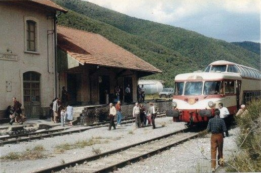
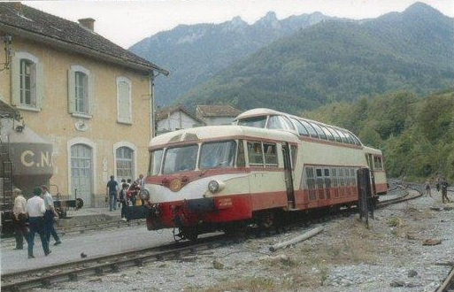
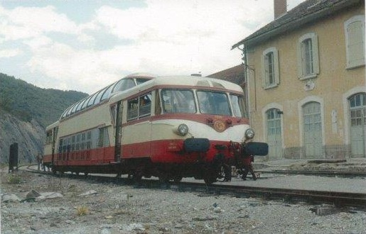
16 mai 1985 l’ X 4028 Picasso des Autorails du Minervois (ATM) de Narbonne est monté jusqu’à la gare de St Martin-Lys. - Passage du pont du Bourrec - photo Roger Nautré du site sur Quillan

En 1983/84 un autorail X 2100 prendra un groupe d’enfants des écoles de St Paul de Fenouillet pour rejoindre Le Train Jaune en gare de Villefranche de Conflant.
En 1988, c’est un train MV (marchandises-voyageurs) qui fera visiter aux élus régionaux et dirigeants SNCF les gares Fret de la ligne, dans une voiture Corail.
En 1987 un train de marchandise affrété pour le tournage du film « Les spécialistes » monta jusqu’à St Paul de Fenouillet.
En septembre 1988, un train de wagons grumiers de Fret SNCF monte à Axat pour démonstration de chargement dans le cadre des journées forestières du canton d’Axat.
Des trains spéciaux depuis 2001, début de l’exploitation de la ligne par TPCF :
Le 18 septembre 2004, un train composé d’une voiture du train touristique de Toulouse, tractée par un 63000 du TPCF, de l’autorail X 3944 du TPCF et l’ X 4028 de l’ATM monte à Axat pour le centenaire de la ligne (1904/2004). Photos : Jean-Pierre Lescure.
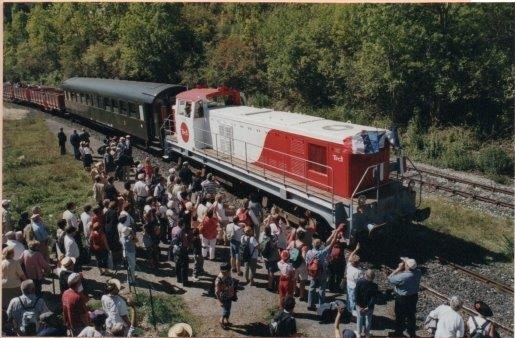
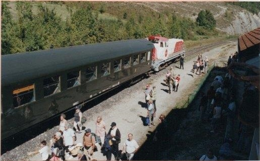
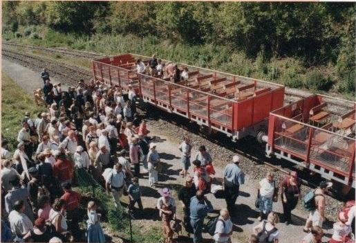
Les 14 et 15 avril 2007, l’ X 4208 Panoramique de L’AGRIVAP d’Ambert fait visiter le Pays Cathare à un groupe de passionnés du rail. Photos : Guillaume Pourageaux, collection Jean-Pierre Lescure.
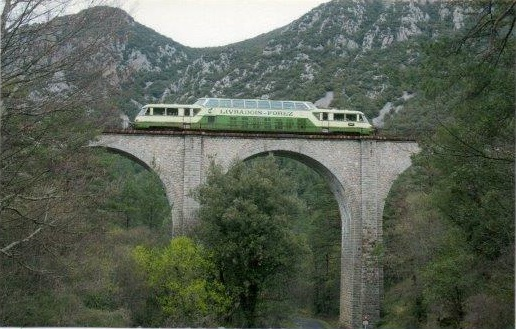
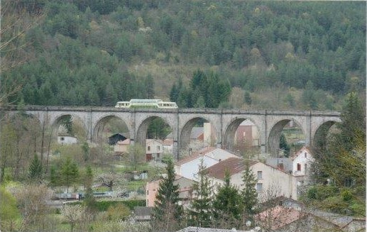
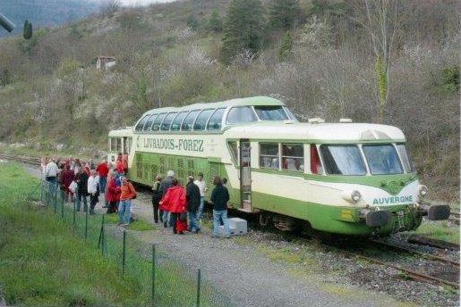
En juillet et août 2011, ce n’est pas un train spécial qui est venu mais c’est un événement exceptionnel qui est arrivé sur la ligne du TPCF : La venue d’une machine à vapeur chauffée au charbon. C’est en effet la locomotive articulée de type Mallet 020-020 du train touristique de La Doller en Alsace qui a passé les deux mois d’été à circuler entre St Paul de Fenouillet et Axat. Venue sur une remorque routière spécialisée depuis l’Alsace elle est arrivée et repartie en gare de Cases de Pène, puis par ses propres moyens jusqu’à Caudiès de Fenouillèdes lieu de son garage. Un camion Russe avait acheminé depuis la Pologne 25t de charbon. Un bien bel été pour cette locomotive qui a la particularité d’être très proche du type de machine qui ont circulé sur le réseau CFPO (Chemin de Fer des Pyrénées Orientales) autour de Perpignan. Particularité que les habitants de ce département ont en majorité ignoré, car peu sont venu admirer la consœur…
Cette expérience ne devrait pas être reconduite car la clientèle du train touristique vient avant tout pour admirer les paysages offerts à leurs yeux. La venue de cette machine n’a pas apporté une augmentation significative de la fréquentation des trains. D’autant que les frais de fonctionnement de ce type de machine est très supérieur aux autorails et locomotives diesel. Photos : Guillaume Pourageaux, collection Jean-Pierre Lescure.
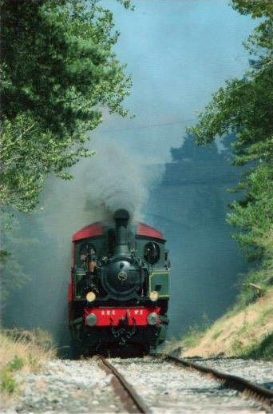
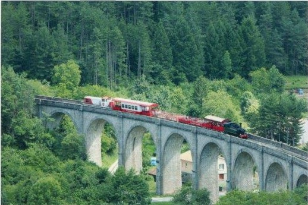
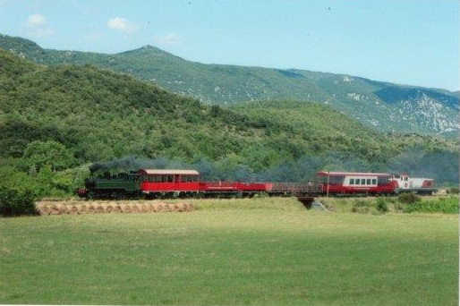
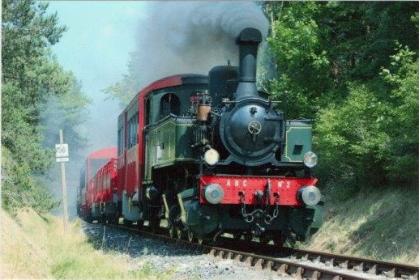
Le 16 juin 2013, les Picasso de l’ABFC de Dijon et celui du chemin de fer des Ardennes montent à St Paul de Fenouillet avec des amateurs de chemin de fer Suisse. Ceux-ci monteront à Axat avec les voitures Panoramiques du TPCF et déjeuneront dans la salle polyvalente. Deux bus les porteront à Quillan. Les deux Picasso dans le temps du repas sont retournés à Rivesaltes, ont pris la direction de Narbonne, puis celle de Carcassonne et enfin celle de Quillan, pour récupérer les amateurs Suisse. Deux Picasso à Quillan : c’était la première fois que cela se produisait. Même le journaliste présent à fait la confusion avec les 150cv qui circulaient de 1954 à 1976 sur Carcassonne/Quillan. Photos : Jean-Pierre Lescure.
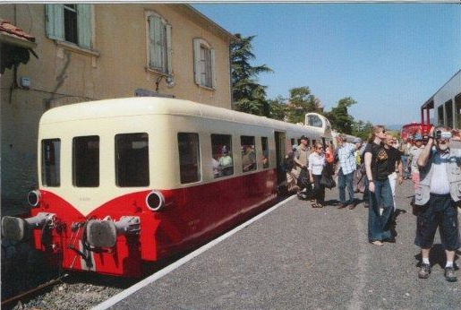
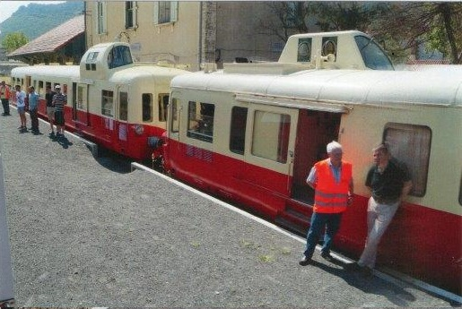
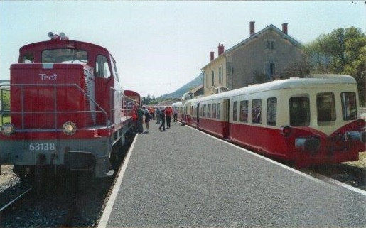
Le 23 mai 2015, les deux autorails X 2800 et leur remorque XR 6000, sont venus de Nîmes avec des passionnés de chemin de fer et des passionnés de paysages, ont transité par Rivesaltes et sont montés jusqu’à Axat et St Martin-Lys. Repas dans la salle polyvalente d’Axat et retour le soir sur Nîmes.
Voilà pour le moment les trains spéciaux qui ont circulé sur la ligne du Train du Pays Cathare. On pourrait rajouter les trains d’acheminement de matériel que le TPCF héberge et sauvegarde, mais ce ne sont pas des trains ouvert aux voyageurs. Seuls les très passionnés de la chose ferroviaire y attachent de l’importance, on leurs laissera ce plaisir… Photos : Guillaume Pourageaux, collection Jean-Pierre Lescure.
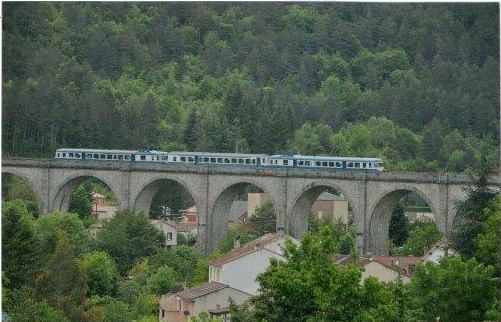
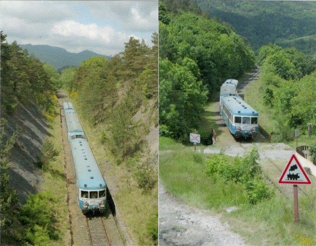
Nouvelles activités proposées par le TPCF - les vélos-rail
Pour plus d'information sur le train touristique ou pour la réservation d'un vélo-rail voir le site du TPCF ou son facebook).
Une autre activité est proposée depuis l'été 2022 :
pédaler à bord d'un vélo-rail qui vous permet de circuler sur les rails de notre voie ferrée plus que centenaire depuis la gare d'Axat. Possibilité de faire deux parcours : celui des Radeliers (en suivant l'Aude vers Saint Martin - 45 mn) et celui des Bûcherons (en remontant le Campérié - 1 h 30) et pour les costauds la possibilité de faire les 2 parcours ensembles (pour les costauds car dans ce cas pas moteur d'assistance électrique sur le vélo rail...).
Pour les vélos-rail, les nouvelles machines sont arrivées à Axat le 23 mars 2022.
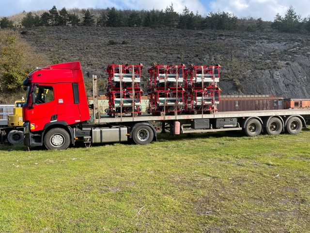
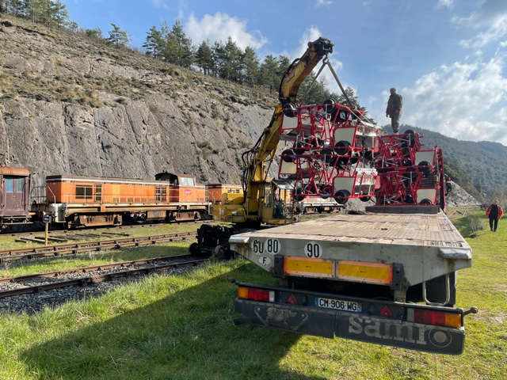
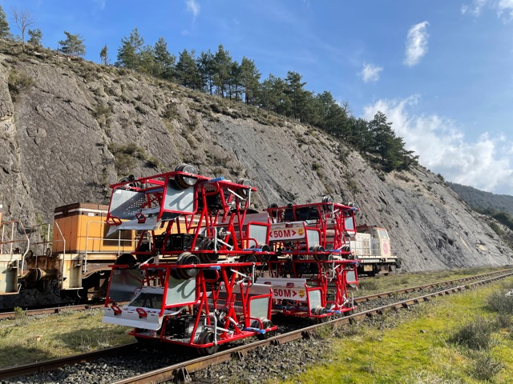
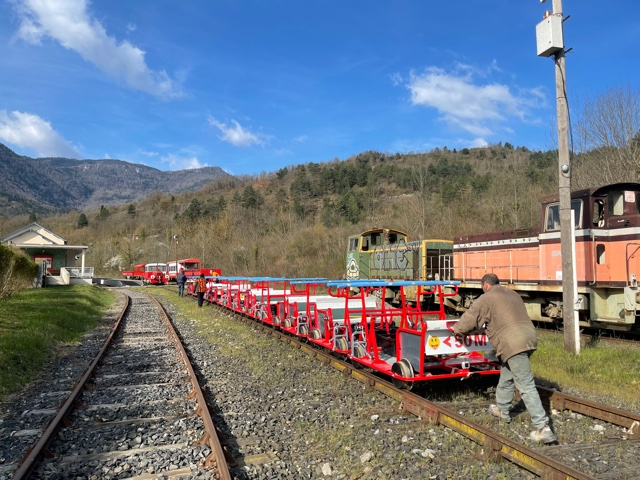
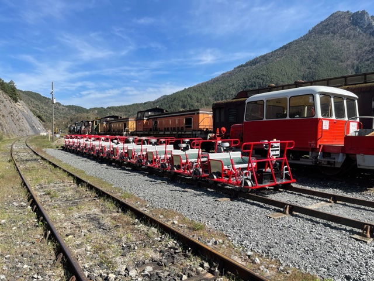
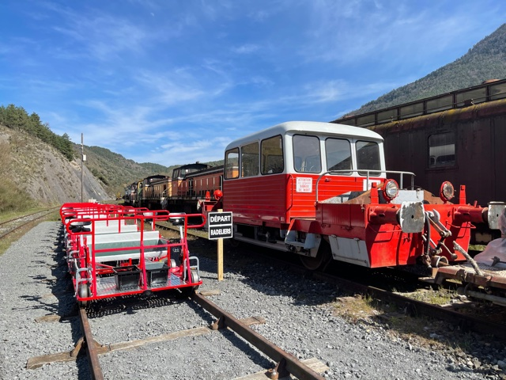
Déchargement des vélos-rail, lors de leur livraison à la gare d'Axat - Photos de Yves Guimezanes transmises par Jean-Pierre Lescure
Parcours des Radeliers
Les radeliers étaient ces hommes qui, montés sur des troncs d'arbre, guidaient sur l'eau ces grumes vers l'aval de la rivière, à Quillan dans notre haute vallée de l'Aude.
Ce parcours d'Axat à la gare de St Martin Lys permet de passer tous les tunnels et ponts qui jalonnent les 3 kilomètres de voie ferrée entre les 2 gares
Photos transmises par Jean Pierre Lescure
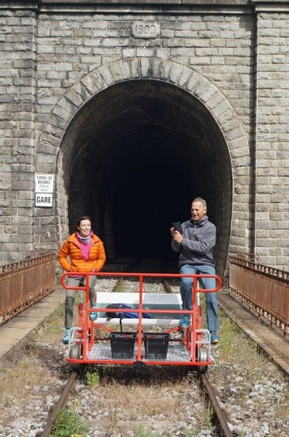
Tunnel du Bourrec, coté du pont du même nom
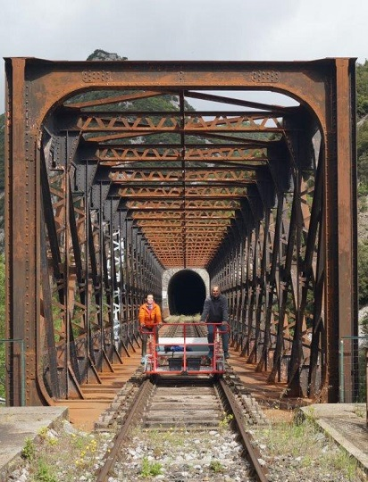
Pont cage du Bourrec
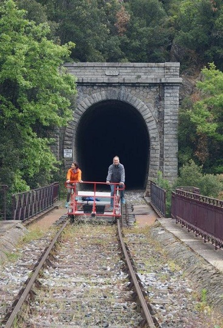
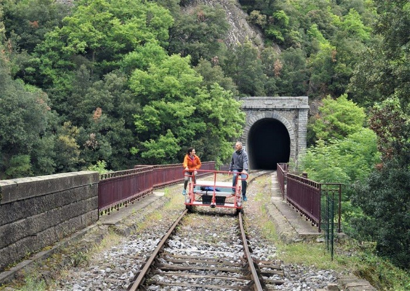
Sortie du tunnel de la Gamasse et pont sur l'Aude du même nom
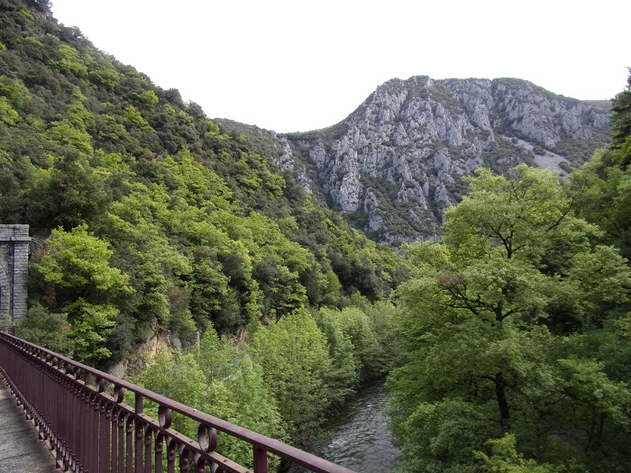
Vue du plateau Planèses depuis le pont de la Gamasse,
la grotte de Planèses apparaît dans la percée au milieu de la photo en dessous de la montagne des Roumens
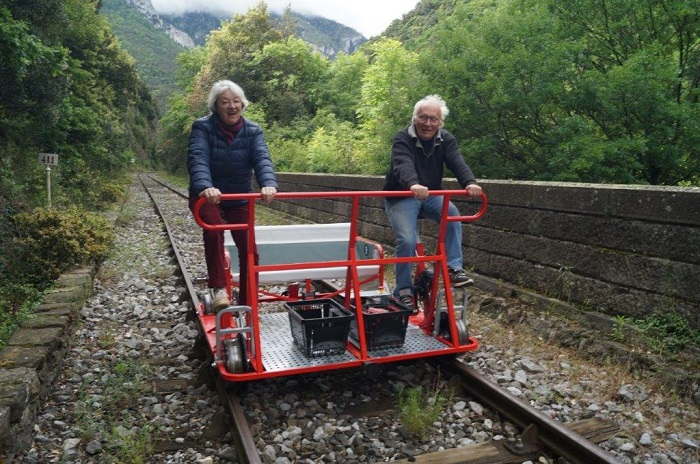
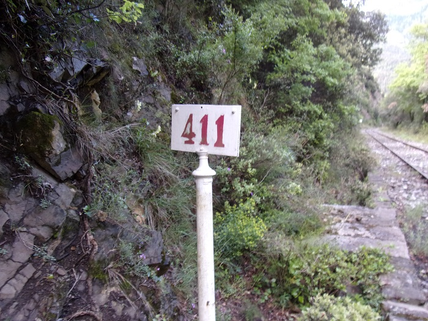
Passage du kilomètre 411, le seul panneau indicatif du parcours (me semble-t-il...)
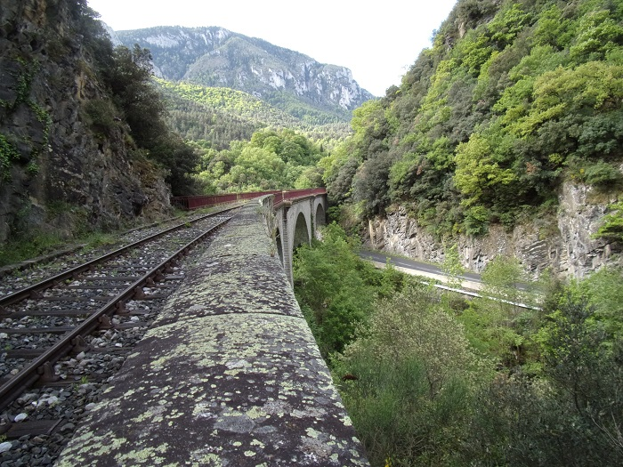
Pont à l'entrée d'Axat
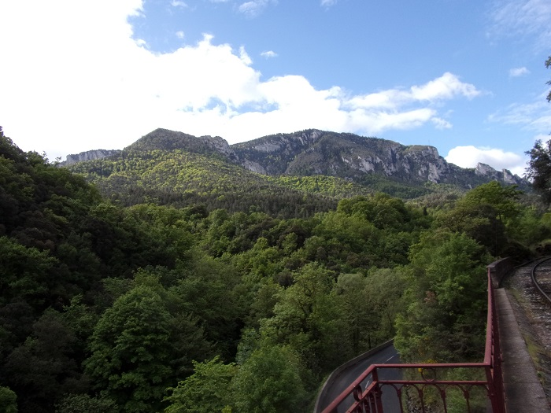
Vue depuis le pont à l'entrée d'Axat
Cirque d'Axat dans la direction du parcours des bûcherons
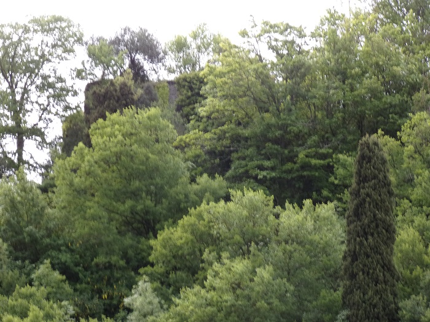
Reste du château d'Axat dominant le bourg,
vue depuis l'entrée de la galerie d'Embrosse
Ses pourtours mériteraient peut-être un peu de nettoyage
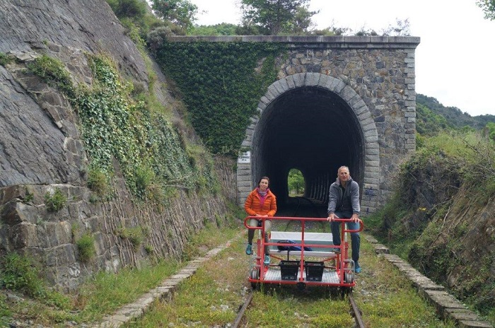
Sortie de la galerie d'Embrosse au dessus d'Axat
Parcours des Bûcherons
Ce circuit permet en partant de la Gare d'Axat d'atteindre le haut du col du Campérié (là où se déroulent les journées forestières d'Axat tous les 2 ans) - possibilité de demander un moteur d'assistance électrique pour aider à grimper... Conseillé.
Il offre le plaisir de traverser les 192 mètres du grand viaduc "Canals" d'Axat avec ses 9 arches et d'apercevoir de là les célèbres gorges de St Georges, puis d'entrer immédiatement dans le tunnel de même nom (Canals),
de grimper les méandres du Campérié en traversant encore 2 tunnels successifs (tunnel de la Garrigue et tunnel de Montadure (c'est tout dire...)) pour sortir du cirque d'Axat et de s'arrêter avant le pont des soupirs (celui que poussaient les locomotives à vapeur quand elles avaient enfin réussi à franchir cette rampe finale - c'est aussi pourquoi je pense que l'assistance électrique sur ce parcours est une bonne idée...)
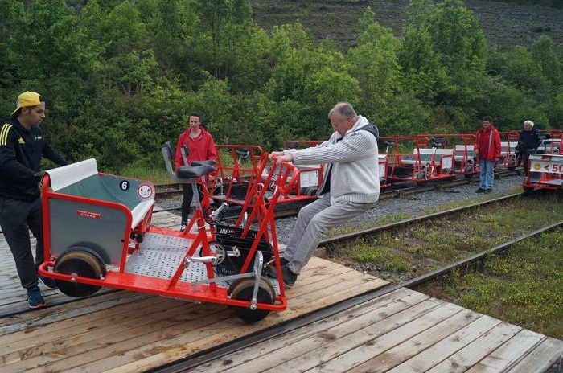
Mise en place du vélo rail pour le parcours des bûcherons
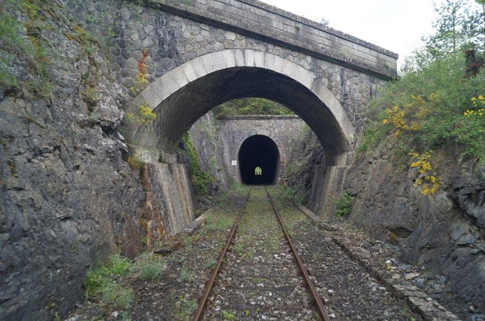
Dernier pont d'Axat entre les 2 tunnels, avec vue sur celui de la Guarrigue,
en regardant vers la gare
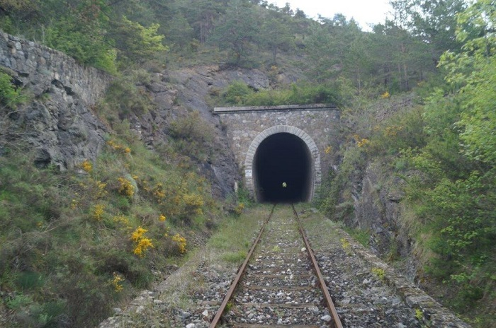
Le tunnel de Montadure, juste après le pont
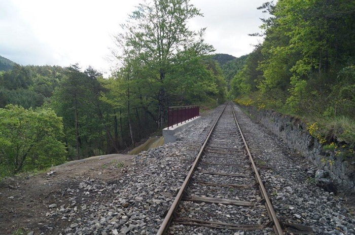
La rampe du Campérié, tout droit vers le col. A Gauche la forêt domaniales des Fanges (hors du champ de la photo)
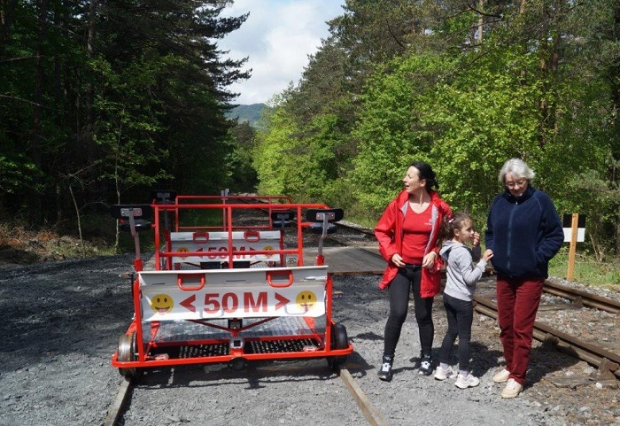
Aire de "retournement" au col du Campérié
Commentaires
Cliquer ici pour faire un Commentaire
Retour à l'accueil Précédent